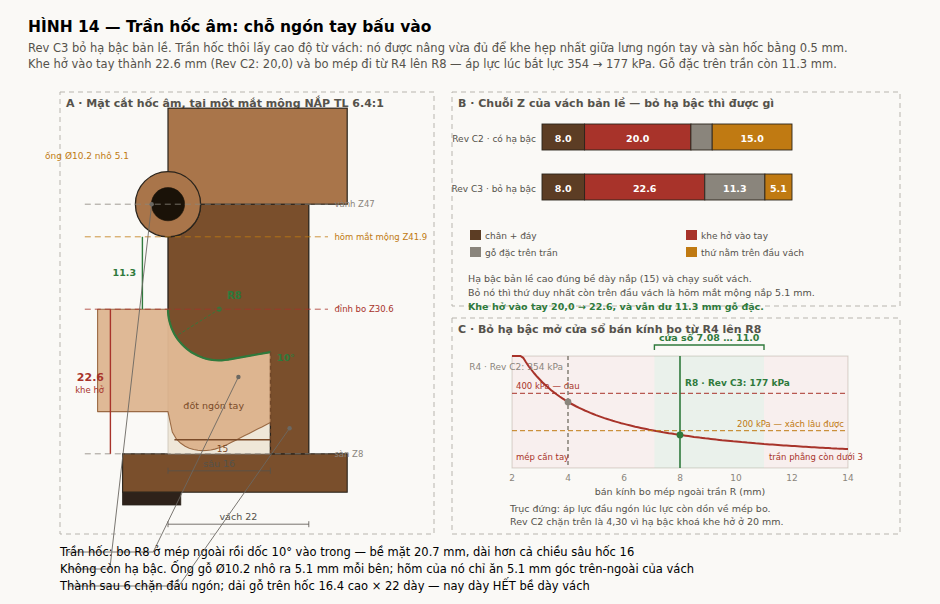
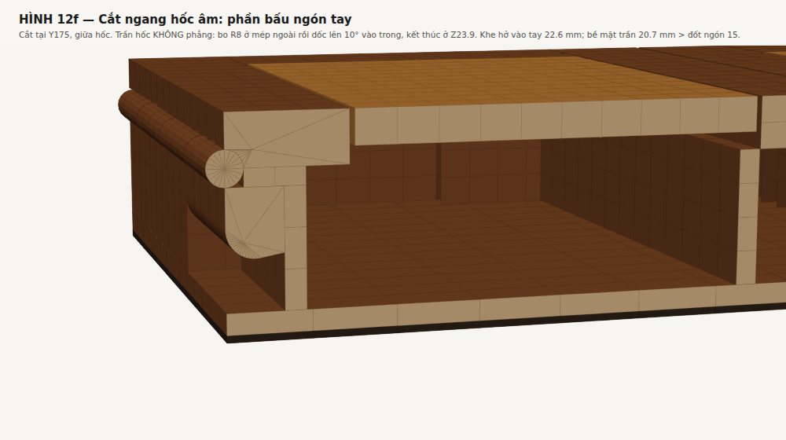
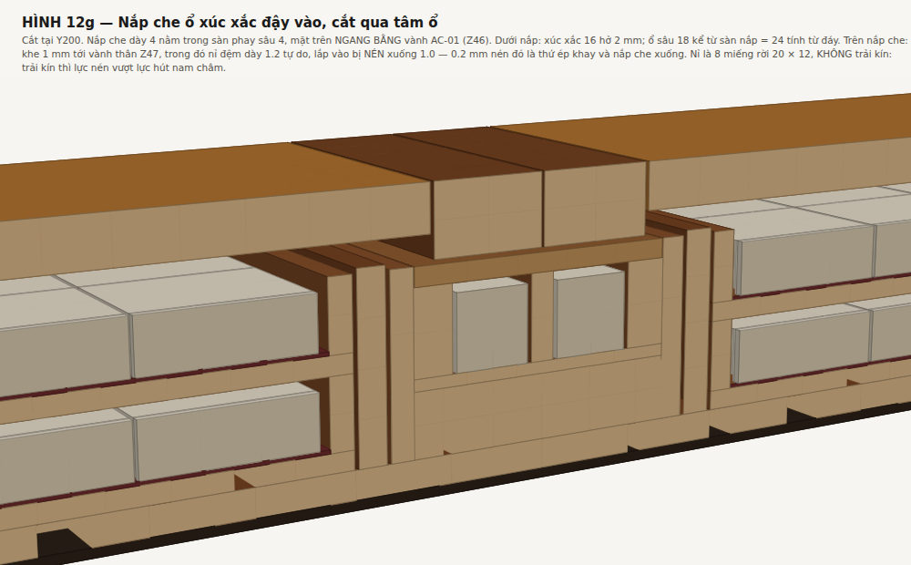

Bộ 6 sheet của Rev B gồm GA-01, GA-02, TR-01, AC-01, HD-01, QA-01. Chi tiết quan trọng nhất — thân hộp — chỉ tồn tại dưới dạng một chuỗi kích thước trên mặt bằng GA-02. Không có dung sai khoang, không có mặt cắt, không có vị trí bản lề so với chuẩn, và chuẩn A/B/C được QA-01 tham chiếu nhưng chưa hề được định nghĩa ở đâu. Đó là review Rev B §2.2.
Sheet này lấp chỗ đó. Mọi trị số sinh từ tools/box_spec.py; hình sinh từ tools/draw_bx01.py.
| X (bề rộng) | 388.2 = thân 378 + 2 × 5.1 ống bản lề nhô ra |
| Y (chiều sâu) | 350 |
| Z (chiều cao) | 62 |
| Khối lượng cả bộ | 6.45 kg (khay lõi ổn định) · 7.08 kg (khay cocobolo) |
Chuẩn đặt trên thân hộp vì thân là chi tiết gia công trước và mọi thứ khác lắp theo nó.
| A | Mặt đáy ngoài của thân, trước khi dán chân đệm. Chuẩn Z. Mọi cao độ trong hồ sơ đo từ đáy, không đo từ vành. |
| B | Mặt ngoài vách bản lề trái (mặt vách gốc, không phải mặt ống gỗ nhô ra). Chuẩn X. Chọn mặt này vì trục chốt bản lề nằm đúng trên nó (X = 0): mọi sai lệch của mặt này đi thẳng vào vị trí trục, nên nó phải là chuẩn chứ không phải kích thước suy ra. |
| C | Mặt ngoài vách trước — mặt vách gốc, không phải mặt gỗ nối của hốc âm. Chuẩn Y. Gỗ nối là chi tiết nổi lên, không được làm chuẩn. |
X: 22 + 126 + 6 + 70 + 6 + 126 + 22 = 378
Vách bản lề 22 là SUY RA từ hốc âm hai tay: sâu 16 + thành sau 6. Nó không phải một số tự chọn — box_spec.py tính WALL_HINGE = GRIP_D + GRIP_BACK nên hai trị số này không bao giờ lệch nhau được. Hốc sâu 16 chứ không phải 12: đốt ngón tay ngoài cùng dài ~15 mm, ở hốc 12 mm nó chỉ lọt 80 % nên ngón không gập lại móc được, toàn bộ tải dồn qua đầu ngón bấm vào mép. Ba cách đóng lại chuỗi X đã so ở tools/width_options.py; chọn khoang 126/70 vì nó không động tới bố trí lòng hộp, còn 62 làm hỏng hai chi tiết công năng của AC-01.
Y: 10 + 330 + 10 = 350. Không có gỗ nối nào — hốc âm hai tay nằm gọn trong vách trái/phải.
Z: chân 2 + đáy 6 + 2 × khay 19 + khe 1 = vành Z47; nắp 15 → mặt trên Z62.
Nắp đều 15, không vát, nên vành thân phẳng Z47 suốt. Bề dày nắp không còn định đường kính ống gỗ kể từ khi trục dời ra arris — nó được chọn 15 để lấy khay bỏ bài sâu 5,0 mm và tấm Nu 7 mm. Xem mục Bản lề.
Ống gỗ bản lề Ø10.2 có tâm đúng trên arris (X = 0), nên nó nhô ra 5.1 mm mỗi bên. Phủ bì X = 378 + 2 × 5.1 = 388.2. Đổi lại, vách bản lề không phải hạ bậc — xem mục Bản lề và mục Hốc âm hai tay.

Nguyên tắc: cái gì lắp với chi tiết khác thì dung sai một chiều và đi về phía lỏng hơn; cái gì chỉ để nhìn thì dung sai đối xứng.
| Kích thước | Trị số | Dung sai | Lý do |
|---|---|---|---|
| Khoang khay quân (X) | 126 | +0,40 / 0 | khay 124 −0,25 → khe 1,00…1,45 mỗi bên |
| Khoang phụ kiện (X) | 70 | +0,40 / 0 | AC-01 68 −0,25 → khe 1,00…1,45 mỗi bên |
| Lòng hộp (Y) | 330 | +0,50 / 0 | khay 325 −0,30 → khe 2,50…3,00 mỗi đầu |
| Bề dày vách bản lề | 22 | ±0,15 | hốc âm sâu 16 + thành sau 6 (suy ra, không tự chọn) |
| Bề dày vách ngăn | 6 | ±0,20 | không lắp với gì, chỉ chia khoang |
| Bề dày đáy hộp | 6 | ±0,20 | vào chuỗi Z |
| Cao độ vành | 47 | ±0,30 | quyết định khe 1,0 trên đỉnh khay |
| Lỗ chốt bản lề | Ø5.20 | +0,05 / 0 | chốt gỗ Ø5.00 −0,05 → khe 0,20…0,25 |
| Đồng trục lỗ chốt | — | ≤ 0,15 | hai đầu lệch nhau quá thì bản lề kẹt |
| Bước mắt mộng | 45 | ±0,10 | cộng dồn 6 bước → ±0,25 ở đầu chuỗi |
| Đường kính ống gỗ | Ø10.2 | ±0,15 | = chốt Ø5 + thành gỗ 2.5 mỗi bên |
| Hõm mắt mộng nắp | R5.1 | +0,10 / 0 | 1/4 đĩa ở góc trên-ngoài, chỉ tại băng của mộng NẮP |
| Hạ bậc vành, cao | 15 | +0,20 / 0 | phải ≥ bề dày nắp; thấp hơn là mặt đầu cánh quét vào vách |
| Phủ bì X, Y | — | ±0,50 | không dùng độc lập với nắp — xem dưới |
| Đồng mép nắp–thân | — | ±0,30 | dung sai quan hệ, nắp cắt theo thân thực tế |
Bản lề là mắt mộng gỗ, không một chi tiết kim loại nào. Đây là ràng buộc vật liệu đã chốt từ đầu.
| Trục xoay | P = (0.0 , 47) — đúng trên arris: X = chuẩn B, Z = vành thân |
| Ống gỗ | Ø10.2 = chốt Ø5 + thành gỗ 2.5 mỗi bên |
| Nhô ra ngoài | 5.1 mm mỗi bên → phủ bì X 388.2 |
| Hạ bậc vành | không có |
| Mép ngoài cánh nắp | 0.0 — trùng mặt ngoài vách |
| Chuỗi mắt mộng | 7 mắt × 44, bước 45, chuỗi 314, đặt giữa cánh dài 350 |
| Phân bổ | mắt 1, 3, 5, 7 thuộc THÂN; mắt 2, 4, 6 thuộc NẮP |
| Hõm cho mắt mộng NẮP | 1/4 đĩa R5.1 khoét vào góc trên-ngoài của vách, chỉ tại băng của mộng nắp |
| Chốt | gỗ cocobolo thẳng thớ Ø5.00 −0,05 × 160, 2 chốt mỗi cánh, gặp nhau ở mắt mộng giữa |
| Lỗ chốt | Ø5.20 +0,05/0 |
| Thành gỗ quanh lỗ | 2.5 mm — chi tiết mỏng nhất của cả cái hộp |
| Mặt chặn 180° | không phay gì — mặt cạnh nắp áp thẳng vào mặt ngoài vách, 3649 mm² (cao 9.9) |
Bề dày nắp không còn định đường kính ống. Bản trước đặt trục ở giữa bề dày nắp và suy ra ống gỗ R = nửa bề dày nắp. tools/hinge_kinematics.py §1 quét lại bài toán bằng số và cho đúng ba họ nghiệm:
| HỌ A · trục trong nắp | HỌ B · trục trên arris | HỌ C · trục lùi vào R | |
|---|---|---|---|
| Trục xoay | (7.5 , 54.5) | (0.0 , 47) | (5.1 , 47) |
| Ống gỗ | Ø15.0 | Ø10.2 | Ø10.2 |
| Ống bị ép bởi | bề dày nắp | chốt + thành gỗ | chốt + thành gỗ |
| Nhô ra mỗi bên | 0.0 | 5.1 | 0.0 |
| Hạ bậc vành | không | không | 5.1 × 15 |
| Mép nắp lùi vào | 0.0 | 0.0 | 5.1 |
| Phủ bì X | 378.0 | 388.2 | 378.0 |
| Chặn 180° | phải PHAY | tự nhiên | tự nhiên |
| Bán kính bo mép trần hốc âm cho phép | — | ≤ R11.0 | ≤ R4,3 |
Đã chọn họ B (Rev C3; Rev C2 chọn họ C). Lý do đổi không nằm ở bản lề mà ở hốc âm hai tay.
Hạ bậc của họ C là R × bề dày nắp = 5.1 × 15 và chạy suốt 350 mm trên vành ngoài trên của vách bản lề. Nhưng hốc âm hai tay nằm đúng trên vách đó. Hạ bậc vì thế:
Bỏ hạ bậc thì cả ba cái đó biến mất: khe hở vào tay 22.6, bo mép R8 (178 kPa), dải gỗ trên hốc dày hết 22 mm. Giá phải trả là 10.2 mm phủ bì X.
Để trả bớt giá đó, ống gỗ được hạ từ Ø12.2 (chốt Ø6 + thành 3,0) xuống Ø10.2 (chốt Ø5 + thành 2.5): dải nhìn thấy bớt 2.0 mm, phần nhô ra bớt 1.0 mm mỗi bên.
tools/hinge_concealed.py §5, và nó có điều kiện: phải khoan thử lỗ Ø5.20 sâu 160 mm xuyên 7 mắt mộng cocobolo và đo được độ trôi mũi khoan ≤ 0,10 mm trước khi chốt. Nếu đo lớn hơn thì phải trả thành gỗ về 3,0 và ống về Ø11.2 — phủ bì X thành 389.2. Đây là rủi ro chế tạo, không phải giả thiết.Chi tiết đầy đủ: docs/DONG-HOC-BAN-LE.md.
Phương án xách C. Hốc âm nằm ở vách trái và phải — tức vách bản lề, dày 22.
| Kích thước hốc | 120 rộng (theo Y) × 16 sâu; khe hở vào tay 22.60 tại mặt ngoài |
| Băng Y | 115 … 235, đối xứng quanh giữa chiều sâu Y = 175 |
| Băng Z | 8 … 30.60 — đáy hốc ngang sàn trong, đỉnh là đỉnh bo mép |
| Trần hốc | bo R8 ở mép ngoài rồi dốc 10° lên phía trong; bề mặt trần 20.68 mm |
| Cao độ trần | thấp nhất Z22.60 (tại x = 8) → Z23.89 tại đáy hốc |
| Bề dày vách tại hốc | 22, không nối gỗ ra ngoài |
| Thành sau hốc | 6 mm |
| Dải gỗ trên hốc | 16.40 cao × 22 dày — dày HẾT bề dày vách, vì không còn hạ bậc |
| Gỗ đặc còn trên trần | mỏng nhất 11.30 mm (yêu cầu ≥ 4.0) |
| Dải gỗ dưới hốc | 6 mm, lại được đáy hộp đỡ lưng |
Suy đầy đủ: tools/grip_hook.py.


Rev C2 lấy trần = đáy hạ bậc trừ đi một lớp gỗ sàn. Đó là một sự tình cờ: hạ bậc biến mất thì trị số ấy vô nghĩa. Rev C3 định nghĩa lại:
nâng trần vừa đủ để khe hẹp nhất giữa LƯNG ngón tay và SÀN hốc bằng đúng FING_MAR = 0,5 mm
rồi hỏi riêng: vách còn đủ gỗ trên trần không? Còn 11.30 mm — dư nhiều.
Kết quả: khe hở vào tay 22.60 (Rev C2: 20,0), đỉnh bo ở Z30.60.
| họ bản lề | hạ bậc | hõm mắt mộng nắp | trần hốc cao nhất | bo mép cho phép |
|---|---|---|---|---|
| C | 5.1 × 15 | Z41.9 | Z32.0 | ≤ R4,3 |
| B (đang chốt) | không | Z41.9 | Z41.9 | ≤ R11,0 |
Bỏ hạ bậc trả lại 9.9 mm chiều cao vách cho hốc âm.
Chặn dưới là áp lực. Lực bao giờ cũng bắt đầu dồn về mép bo; da đầu ngón bọc quanh mép chừng 60°, tức dải chạm chỉ rộng R × 1.047. Với 96 N mỗi tay, 4 ngón × 16 rộng:
không ĐAU (≤ 400 kPa) → R ≥ 3.57 xách LÂU được (≤ 200 kPa) → R ≥ 7.14
Chặn trên là đoạn trần phẳng phải còn ≥ 3,0 mm sau khi bo ăn vào → R ≤ 11,0.
cửa sổ: 7.14 ≤ R ≤ 11,0 dao bo cạnh có sẵn: 3, 4, 5, 6, 8, 10 → lọt vào: R8, R10 lấy dao NHỎ NHẤT lọt vào (bo càng to càng ăn vào trần phẳng): R8
Áp lực lúc bắt lực: 178 kPa (Rev C2 với R4: 357 kPa). Ngưỡng: ~100 kPa êm, ~200 kPa chịu được lâu, >400 kPa đau trong một phút.
Trần dốc lên phía trong thì phản lực có thành phần ngang đẩy ngón tay ra. Không tuột khi tan(dốc) ≤ μ (ma sát da tay / gỗ đánh bóng). μ = 0.40 → dốc tối đa 21.8°. Chốt 10°, hệ số 2.27×. Cái dốc nâng trần lên 2.82 mm ở đáy hốc, vừa đúng cho đầu ngón gấp lại mà vẫn chạm trần suốt cả 15 mm.
Bản Rev C1 đặt trần hốc phẳng ở Z36 (sàn trong 8 + chiều cao hốc 28, một số tự chọn). Z36 nằm trong dải hạ bậc Z32…47, nên ở 6,1 mm ngoài cùng không còn gỗ ngay trên trần: đoạn trần móc được chỉ còn 9,9 mm thay vì 16 — 66 % đốt ngón, còn tệ hơn hốc sâu 12 đã bị loại.
Tự kiểm lúc đó viết GRIP_Z1 > Z_RIM − REBATE_H và REBATE_D > GRIP_D. Vế sau là 6,1 > 16 — luôn sai, nên cả mệnh đề không bao giờ nổ. Một điều kiện và có một vế luôn sai là một cái lưới trang trí.
Tự kiểm mới không so hai số nữa: nó quét từng điểm trên trần, ở mỗi x đòi hỏi còn ≥ 4.0 mm gỗ đặc bên trên (GRIP_LIP_MIN). Rev C3 bỏ hạ bậc rồi nhưng kiểm đó vẫn giữ — chính nó là thứ chứng minh trần mới thoát.
Hốc cần 16 (sâu) + 6 (thành sau) = 22 mm bề dày. Vách trước/sau chỉ có 10 → phải nối gỗ ra ngoài, phủ bì Y đi từ 350 lên 374. Nhưng nặng hơn thế: vách trước/sau là chỗ duy nhất nắp và vành thân còn chồng lên nhau, tức chỗ duy nhất đặt được nam châm khóa nắp, và là chỗ duy nhất khoét được khe luồn ngón nhấc khay. Ba chi tiết tranh nhau một bộ phận dày 10 mm.
Chính hốc âm mới là thứ định ra bề dày 22 (16 + 6); bản lề không đòi hỏi gì về bề dày vách.
Tiết diện thật là chữ L (dải gỗ trên trần + thành sau hốc), tính bằng tích phân số trong tools/grip_hook.py mục 7, nhịp 120 ngàm hai đầu. Cận dưới — chỉ lấy dải gỗ trên trần như một chữ nhật 16.4 × 22. Kết cấu không phải ràng buộc — ràng buộc nằm ở bàn tay.
Đây là chi tiết khó nhất trên sheet, và đề xuất trong review Rev B §2.3 không đóng được.
Trường quân chiếm gần hết khoang theo cả hai phương: cần 310,4 × 112,4 trong lòng khay 315 × 114, và khay 124 × 325 trong khoang 126 × 330. Dư địa còn 4,6 mm theo dài và 1,6 mm theo rộng. Không có chỗ nào quanh khay lọt được ngón tay. Khoét vành thân chỉ làm lộ mặt ngoài khay chứ không cho gì để móc; khoét vành khay thì ngay sau vành là trường quân, đỉnh quân chỉ thấp hơn vành khay 2,8 mm. Và "kẹp" cần hai điểm đối diện, mà hai bên đối diện của khay đều bị chắn — một bên là vách bản lề gỗ đặc dày 22, bên kia là vách ngăn dày 6.
Lời giải là khe luồn ngón + mỏ móc, ở hai đầu khoang, nhấc hai tay, cho cả ba khoang (X = 81, 185, 289):
| Hốc trên vách trước/sau | 50 rộng × sâu 6 vào vách 10, chạy từ vành xuống sàn Z8 |
| Da ngoài còn lại | 4 mm — mặt ngoài hộp không thủng |
| Khoét mặt đầu khay | 50 rộng × cao 12 từ vành khay xuống, xuyên hết bề dày vách khay 5 |
| Khe luồn ngón | 6 + 2,5 + 5 − nỉ 1 = 12,5 mm |
| Mỏ móc ngón | sâu 5 × rộng 50, cao 7 mm còn lại dưới chỗ khoét |
| Cao độ mỏ, khay trên | Z34 |
Kiểm mỏ: khay đầy 0,79 kg → 8 N, chia hai tay 4 N mỗi bên. Ép mặt gỗ 0,011 MPa (hệ số 1257×), uốn chân mỏ 0,034 MPa. Kết cấu thừa; ràng buộc là khe 12,5 mm so với đầu ngón khoảng 12 mm dày — vừa đủ.
Đổi lại: chỗ khoét hở ra 9,2 mm trên bề dày quân 11,4. Quân đầu mỗi hàng có thể trượt ra tối đa 13,5 mm rồi chạm đáy hốc — không rơi ra được vì quân dài 36,8, nhưng sẽ kẹn khi trả khay vào. Chặn bằng dải nỉ 1 mm dán vào đáy hốc: vừa chặn quân, vừa làm đệm.
Bản trước phải bỏ khe ở khoang phụ kiện vì hốc âm hai tay khi đó nằm trên cùng vách trước: hốc ăn 16 từ ngoài, khe ăn 6 từ trong, cộng lại thủng vách 10. Chuyển hốc âm sang vách trái/phải làm xung đột đó biến mất, nên AC-01 được nhấc đúng như khay quân — không còn phải kẹp hai dải gỗ qua hõm ngón rãnh Joker.
Rãnh Joker 28 × 152 × sâu 24,5 chứa 8 quân xếp 2 lớp × 4. Quân hở ngang chỉ 2,3 mm mà rãnh sâu 24,5 — không nhặt ra được, phải lật úp cả khay.
Hõm bán nguyệt Ø25 sâu 12, khoét vào dải gỗ từ phía rãnh, ở giữa chiều dài rãnh, trên cả hai dải để kẹp được hai mặt bên của quân. Dải gỗ 15 mm còn lại 3 mm, cộng vách AC-01 5 mm là 8 mm gỗ tổng cộng. Kiểm web còn lại dưới lực ngang 20 N: 1,70 MPa, hệ số 65×. Hõm khoét suốt chiều sâu rãnh để lấy được cả lớp dưới.
Chi tiết đầy đủ ở tờ AC-02 của bộ bản vẽ. Ba cao độ, phay từ một mặt chuẩn là vành AC-01 (không phải đáy khay — đáy khay không lắp với gì):
| cao độ | trị số | ghi chú |
|---|---|---|
| Sàn đặt nắp che | sâu 4 +0,15/0, phủ hết miệng hốc 73 × 58 | nắp tựa bốn cạnh; không hạ bậc vào thành vách nào |
| Khe luồn đầu ngón | 4 × 12 × 18, sâu 14 kể từ vành | một khe cạnh mỗi ổ, phía đầu hộp |
| Ổ xúc xắc | 4 × 18 × 18, sâu 18 kể từ sàn đặt nắp | tổng sâu từ vành 22; góc bo R3 |
Chuỗi khép theo chiều dài: 4 + 12 + 18 + 5 + 18 + 12 + 4 = 73; theo chiều ngang: 8.5 + 18 + 5 + 18 + 8.5 = 58. Vành đỡ nắp che hẹp nhất 4.0 mm.
Vì sao có khe luồn ngón. Quân xúc xắc cạnh 16 nằm trong ổ 18 sâu 18, khe 1.0 mm mỗi bên — không có cách nào lấy nó ra bằng tay. Khe 12 mm cạnh mỗi ổ nuốt được đầu ngón dày 11 mm (cùng trị số dùng cho hốc âm hai tay), ngón áp vào sườn quân rồi nhấc. Sàn khe cao hơn sàn ổ 8 mm, mà quân chỉ hở trên đầu 2 mm dưới nắp che, nên nó không leo nổi bậc để tụt sang khe; và khe 12 vẫn hẹp hơn cạnh quân 16. Ngón chạm được 8 mm chiều cao sườn quân.
Nắp trượt vẫn không làm được, lý do bằng số giữ nguyên: nắp phải trượt ít nhất 65 mm mới lộ hết hai hàng ổ, mà chỗ để nắp trượt vào chỉ có 8 mm; trượt ngang cần 41 mm mà chỉ còn 17 mm.
Nắp thả 72.5 × 57.5 × 4 cocobolo — bằng miệng hốc trừ khe lắp 0.5 mm, chứ không phải bằng trường ổ. Hai hõm ngón nửa tròn Ø18 trên một cạnh ngắn, khoét suốt bề dày, đặt đúng trên hai khe luồn ngón: hõm với qua vành đỡ 5 mm nên đầu ngón xuống tới khe rồi móc ngược lên mép nắp. Gỗ còn lại giữa hai hõm 5 mm, hai góc 8.25 mm. Thớ gỗ chạy theo cạnh 72.5 — cùng chiều thớ AC-01, để ở trạng thái cân bằng hai bên nở như nhau và khe không đổi; khe 0.5 chỉ để chịu quá độ (miếng gỗ dày 4 cân bằng trước khối 38): 0.18 mm ở ±2 %, 0.37 mm ở 4 %.
Dao phay là một ràng buộc thật. Ổ vuông 18 phay bằng dao trụ thì góc bo bằng bán kính dao. Góc quân xúc xắc cách vách ổ 1.0 mm, nên bán kính bo lớn nhất mà góc quân còn lọt là R3.41: dao Ø6 (R3) được, dao Ø8 (R4) làm quân kênh góc.
Chiều cao. Vành AC-01 ở Z46, nắp hộp ở Z47, nỉ đệm dưới nắp 0.8 → nắp che chỉ được nhô 0.2 mm. Dung sai vì thế phải một chiều (sàn 4 +0,15/0, nắp che 4 0/−0,10) để nắp luôn thấp hơn vành 0…0,25 mm. Đáy AC-01 còn lại dưới ổ 16 mm.

Với phương án C hộp luôn được bê ngang nên nắp thả là đủ: xúc xắc chỉ rời ổ khi hộp bị lật nghiêng, mà lúc đó cả hai cánh nắp cũng bung ra. Nắp che không phải tuyến phòng thủ cuối cùng — nó là để xúc xắc không nhảy lạch cạch khi đi.
Vành thân mang 8 hốc nam châm; nắp mang 8 hốc đối ứng. Đây là toàn bộ cơ cấu khóa nắp — xem docs/KHOA-NAP.md để có lập luận vì sao nó phải nằm ở đây và chỉ được chặn phương Z.
| Hốc | 20,2 × 5,2 × sâu 5,2 |
| Vị trí X | 121 và 145, và đối xứng qua khe ráp giữa: 225 và 249 |
| Vị trí Y | 5,5 và 344,5 |
| Dung sai vị trí | ±0,2 — chặt hơn mọi kích thước khác trên sheet |
| Gỗ còn lại | 3,0 ra mép ngoài, 2,0 vào lòng hộp |
Dung sai ±0,2 là có lý do: lệch vị trí giữa hai nửa của một cặp làm tụt lực hút nhanh hơn khe hở giữa hai mặt. Đây là chỗ duy nhất trên thân hộp mà sai số vị trí quan trọng hơn sai số kích thước.
Mặt nam châm phải thụt 0,1 mm dưới bề mặt gỗ, không được nhô. Dán epoxy.
Không có sống nổi. Đệm nỉ 1.2 mm, 8 miếng rời 20 × 12 dán dưới nắp — không trải kín.
Khe trên vành khay và vành AC-01 đều 1.0 mm, nên nỉ 1.2 bị nén 0.2 mm (17 %) và mới thật sự ép. Nỉ 0,8 của bản trước không chạm gì cả — nó còn hở 0,2 mm, tức chi tiết được nêu làm lý do bỏ sống nổi đã không làm việc của nó.
Vì sao là miếng rời chứ không phải tấm trải: nỉ bị nén thì đẩy nắp lên, mà thứ giữ nắp là 8 cặp nam châm (180 N sau khi trừ lớp hoàn thiện). Bề dày nỉ vì thế không còn là biến tự do — diện tích mới là biến.
| Diện tích đệm | 8 × 20 × 12 = 1920 mm² |
| Lực đẩy ngược lên nắp | 38 N = 21 % lực hút nam châm |
| Lực ép mỗi khoang khay | 9.6 N so với trọng lượng khay 2.2 N |
| Nếu trải kín cả ba khoang | ≈ 2125 N — nắp không thể đóng |
Vị trí: X 85, 177, 201, 293 và Y 115, 235. Không miếng nào được vắt qua khe ráp giữa (mở nắp là xé đôi nó), và một miếng phải nằm trọn trên nắp che ổ xúc xắc — đó là thứ duy nhất giữ nắp che khỏi nhảy khi mang đi. Cả hai điều kiện đều có tự kiểm.
Ứng suất nén của nỉ lấy 20 kPa ở biến dạng 17 % — tra bảng, chưa đo. QA-01 P8 đòi đo trên chính loại nỉ sẽ dùng, vì cả bài toán đóng nắp treo vào trị số này.
Review Rev B §3.2 yêu cầu một chi tiết đỡ mép tự do của nắp, nhưng yêu cầu đó nêu khi mép nắp dày 8. Nắp nay đều 15, và ở bề dày 15 thì mép tự do võng 0,30 mm dưới 50 N giữa nhịp 330, ứng suất 3,2 MPa, hệ số 34×. Khe ráp giữa cũng đã 0,6 → 1,5 và khe nằm ngang nên võng không làm hai cánh cào nhau. Chi tiết đỡ không còn cần thiết — xem tools/detail_features.py mục 3.
docs/BX-01.md bang tools/md2html.py. Moi tri so sinh tu tools/box_spec.py.